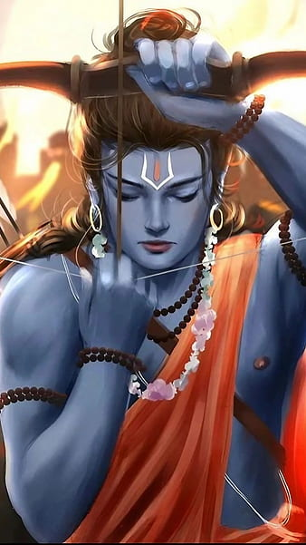

Birthday Card

🌸 Birth and Origin of Lord Rama
Lord Rama, the seventh incarnation of Lord Vishnu, was born during the Treta Yuga, on the ninth day (Navami) of the bright half of the month Chaitra (March–April), a day now celebrated as Rama Navami. His birthplace was the sacred city of Ayodhya, the capital of the Kosala Kingdom, ruled by the noble King Dasharatha. Ayodhya, meaning "the unconquerable", was a city renowned for its glory and spiritual purity.
Lord Rama was born as a divine blessing to King Dasharatha and Queen Kaushalya, following a sacred ritual (Putrakameshti Yagna) performed by the great sage Rishyashringa. Lord Vishnu himself incarnated as Rama to vanquish evil and restore Dharma on Earth, especially to defeat the demon king Ravana, whose tyranny had spread fear across the three worlds.
🧘♂️ Divine Nature and Ideal Qualities
Lord Rama was the embodiment of Maryada Purushottam – the perfect human being, who upheld truth, righteousness, and honor in every aspect of his life. He was a symbol of virtue, humility, and supreme self-control. From childhood, Rama exhibited a calm demeanor, deep intelligence, and a loving heart toward all creatures.
He was a devoted son, a loyal brother, a faithful husband, and a just ruler. Rama was never tempted by power or luxury. Even when offered the throne, he willingly accepted 14 years of forest exile just to honor his father’s promise. His respect for elders, love for justice, compassion for all, and his unwavering dedication to Dharma made him a figure of immense reverence.
⚔️ Bravery and Heroic Deeds
Lord Rama’s life was a saga of heroism and sacrifice. As a young prince, he defeated the fearsome demoness Tataka, liberating sages from terror. He later lifted and broke the mighty bow of Lord Shiva during Sita’s swayamvara, winning her hand in marriage – a feat no other warrior could achieve.
When Ravana, the ten-headed demon king of Lanka, abducted Sita Devi, Rama showed his courage and resolve. He allied with the Vanara Sena (monkey army) and built the legendary Ram Setu, a bridge of stones across the ocean. With the help of Hanuman, Sugriva, and Lakshmana, Rama waged a just war, ultimately slaying Ravana and liberating Sita.
Rama’s heroism was not just physical but spiritual and moral. His strength came from his unshakable commitment to righteousness, even when faced with pain, loss, or injustice. He taught the world that true bravery lies in upholding values, even at great personal cost.
👑 The Ideal King – Rama Rajya
After the end of his exile and the defeat of Ravana, Rama returned to Ayodhya, where he was crowned king. His rule, known as Rama Rajya, was an era of peace, prosperity, justice, and happiness. People lived without fear, crime was nonexistent, and righteousness prevailed in all corners of the kingdom.
Rama treated his citizens like his own family, ensuring fairness and equality. He listened to their concerns, acted selflessly, and held himself to the highest standards of morality. Rama Rajya became the golden ideal of governance – one that every leader aspires to emulate even today.
📿 Worship and Legacy
Lord Rama’s life is chronicled in the Ramayana, composed by the sage Valmiki, and later expanded in devotional works by poets like Tulsidas (Ramcharitmanas). His story continues to inspire millions around the world. He is remembered during major festivals like Rama Navami, Dussehra, and Diwali, symbolizing the victory of light over darkness, good over evil.
Devotees chant his name – “Jai Shri Ram” – as a powerful mantra of hope, strength, and purity. He is not just a mythological figure, but a living example of how a human can strive to live with grace, honor, and courage in a complex world.
✨ Epithets and Symbols
Lord Rama is glorified through several sacred epithets:
Maryada Purushottam – The perfect man who lived within moral boundaries
Raghunandan – Joy of the Raghu dynasty
Ramachandra – The moon-like, gentle king
Dharma Vigrahavan – The embodiment of righteousness
Sita-Pati – The beloved and loyal husband of Sita
His life is not only a story, but a spiritual guide for living with honor, purpose, and inner peace.
🌟 Conclusion
Lord Rama’s divine life teaches us that strength without compassion is meaningless, and duty without love is hollow. He was human in form but divine in action, walking among men yet standing above all in values. From Ayodhya to Lanka, from forests to palaces, he walked the path of Dharma with unwavering faith.
🕊️ His legacy lives forever in the hearts of those who seek truth, courage, and spiritual strength.
🙏 May Lord Rama bless you with wisdom, discipline, and peace.
✨ Jai Shri Ram! 🌺🔥